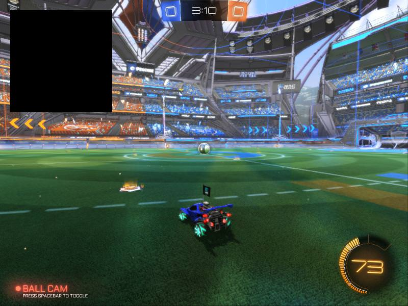

Rendering
An incredibly useful new addition to RLBot v4 is the rendering feature. It allows you to draw objects on screen, which can make debugging and testing your bot so much easier. For example, you could draw the predicted ball path, or draw where the bot wants to go.
Rendering in other languages: Java, C#
Enabling/disabling of rendering
When installing the RLBotGUI, rendering will be disabled by default. You can turn it on by clicking 'Extra' and ticking 'Enable Rendering' in the GUI. However, rendering can also be enabled or disabled any time using the page up and page down keys, respectively. So if your rendering isn't appearing, make sure to press page up before panicking.
The basics
The renderer object is built into the BaseAgent class, so you don't need to import anything other than the BaseAgent. Each time you want to render something, you start with self.renderer.begin_rendering() and end with self.renderer.end_rendering(). The rendering code goes in between the begin_rendering() and end_rendering(). Let's take a look at an example:
class RenderingTutorial(BaseAgent):
def get_output(self, packet: GameTickPacket) -> SimpleControllerState:
controller = SimpleControllerState()
self.renderer.begin_rendering()
self.renderer.draw_rect_2d(20, 20, 200, 200, True, self.renderer.black())
self.renderer.end_rendering()
return controller
We can see here that every get_output call, the on-screen drawings get updated. In this example, the draw_rect_2d method is used. Let's go over all the methods you can use:
(Note: The argument names aren't exactly what appear in the framework itself, but the argument positions are the same)
Rendering a large amount
There are a few limits you can hit when rendering: - MessageLargerThanMax - Not sending message to Rocket League because that would bring the bytes sent since last receive to...
You can bypass the MessageLargerThanMax one by using multiple render groups. Example:
self.renderer.begin_rendering('my_big_render')
for i in range(0, 200):
self.renderer.draw_rect_3d(...)
self.renderer.end_rendering()
self.renderer.begin_rendering('my_big_render_part_2')
for i in range(200, 400):
self.renderer.draw_rect_3d(...)
self.renderer.end_rendering()
If you hit the other limit, you're out of luck.
renderer.create_color and other colors
create_color(a, r, g, b)
- a, r, g, b - Alpha, red, green, blue. From 0 to 255.
This doesn't draw anything on screen, but it is used for creating colors that you can use for the other methods that draw on screen. The renderer also has a list of color methods that gives you the most common colors:
renderer.black()
renderer.white()
renderer.gray()
renderer.blue()
renderer.red()
renderer.green()
renderer.lime()
renderer.yellow()
renderer.orange()
renderer.cyan()
renderer.pink()
renderer.purple()
renderer.teal()
Lastly, there's the team_color method. Using this your bot renders with different colors depending on which team it is on.
team_color(team=None, alt_color=False)
- team - (Optional, None by default) Index of a team (0 for blue, 1 for orange) or None. If set to None, it will use calling bot's team.
- alt_color - (Optional, False by default) Wether or not to return the alternate team color instead. If set to False, this method returns blue for blue team and orange for orange team. If set to True, this method returns cyan for blue team and red for orange team.
renderer.draw_rect_2d
This draws a rectangle on screen. Example : draw_rect_2d(20, 20, 200, 200, True, self.renderer.black()) 
draw_rect_2d(x, y, width, height, fill, color)
- x, y - The top left x and y screen coordinates for the rectangle. (0, 0) is the top left of the screen.
- width, height - The width and height of the rectangle.
- fill - If True, the entire rectangle is filled with color, else it is just an outline of color.
- color - The color of the rectangle. See
renderer.create_color.
renderer.draw_line_2d
NOTE: Currently not supported.
Draws a 2D line flat on the screen.
draw_line_2d(start_x, start_y, end_x, end_y)
- start_x, start_y - Where the line starts. (0, 0) is the top left of the screen.
- end_x, end_y - Where the line ends.
renderer.draw_string_2d
Draws 2D text flat on the screen. Example : draw_string_2d(20, 20, 3, 3, ball_text, self.renderer.black()) example
{kind=link}
draw_string_2d(x, y, scale_x, scale_y, text, color)
- x, y - The top left x and y screen coordinates for the string. (0, 0) is the top left of the screen.
- scale_x, scale_y - The horizontal and vertical scale of the text.
- text - The text to render.
- color - The color of the string. See
renderer.create_color.
renderer.draw_rect_3d
Draws a 2D rectangle in game's 3D space. Size does not change with distance.
draw_rect_3d(location, width, height, fill, color)
- location - The 3D game location where the rectangle should be drawn. Must be a Python list or a tuple (cannot be a ctypes or flatbuffers type).
- width, height - The width and height of the rectangle.
- fill - If True, the entire rectangle is filled with color, else it is just an outline of color.
- color - The color of the rectangle. See
renderer.create_color.
renderer.draw_string_3d
Draws 2D text in game's 3D space. Size does not change with distance.
draw_string_3d(location, scale_x, scale_y, text, color)
- location - The 3D game location where the text should be drawn. Must be a Python list or a tuple (cannot be a ctypes or flatbuffers type).
- scale_x, scale_y - The horizontal and vertical scale of the text.
- text - The text to render.
- color - The color of the text. See
renderer.create_color.
renderer.draw_line_3d
Draws a 2D line in game's 3D space. Size does not change with distance.
draw_line_3d(start, end, color)
- start, end - The starting and ending 3D game locations of the line. Must be Python lists or tuples (cannot be ctypes or flatbuffers types).
- color - The color of the line. See
renderer.create_color.
renderer.draw_line_2d_3d
NOTE: Currently not supported.
Draws a 2D line which starts at screen coordinates and ends at the game's 3D coordinate.
draw_line_2d_3d(start_2d_x, start_2d_y, end_3d, color)
- start_2d_x, start_2d_y - Where the line starts (on the screen).
- end_3d - Where the line ends (in 3D space). Must be a Python list or tuple (cannot be a ctypes or flatbuffers type).
- color - The color of the line. See
renderer.create_color.
renderer.draw_polyline_2d
NOTE: Currently not supported.
Draws multiple connected 2D lines flat on the screen. Useful for rendering paths or pictures.
draw_polyline_2d(locations, color)
- locations - A list of 2D points. A line will be drawn from first point to the second point, and from second point to the third point, ect. (0, 0) is the top left of the screen.
- color - The color of the line. See
renderer.create_color.
renderer.draw_polyline_3d
Draws multiple connected lines in the game's 3D space. Useful for rendering paths. Size does not change with distance.
draw_polyline_3d(locations, color)
- locations - A list of 3D locations. A line will be drawn from first location to the second location, and from second location to the third location, ect. Each location must be a Python list or tuple (cannot be a ctypes or flatbuffers type).
- color - The color of the line. See
renderer.create_color.